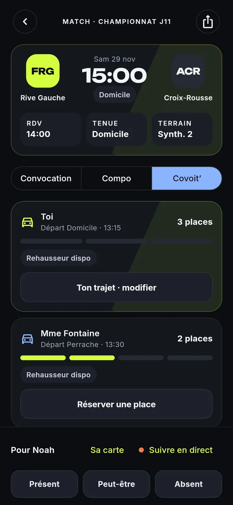
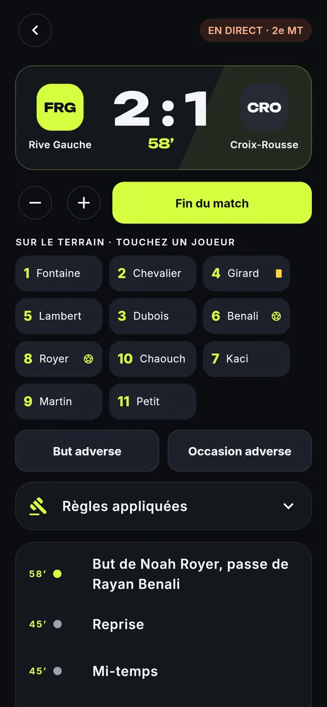
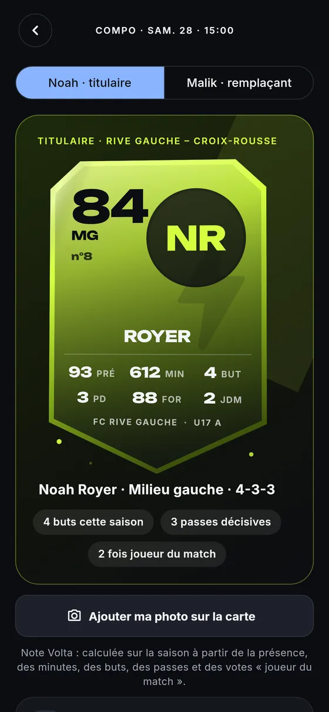
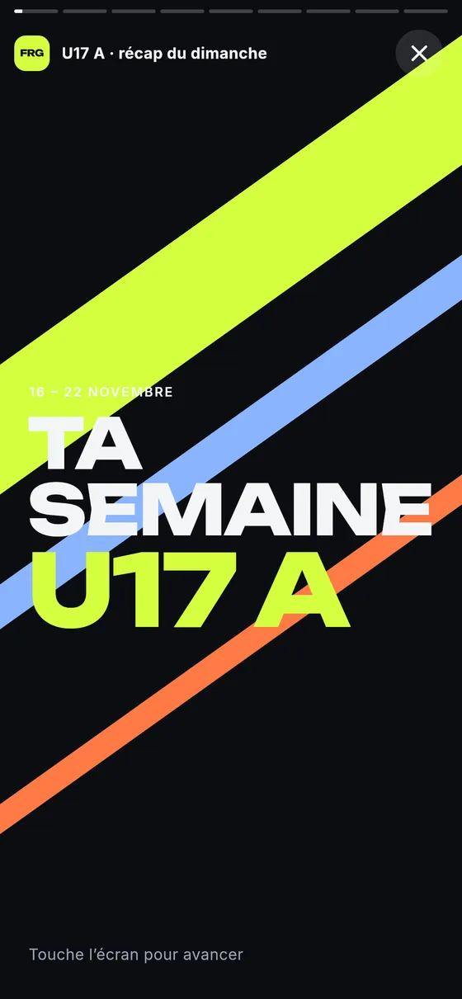
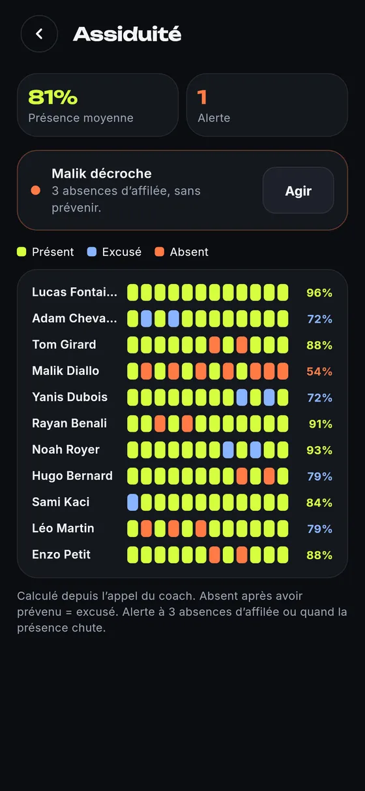
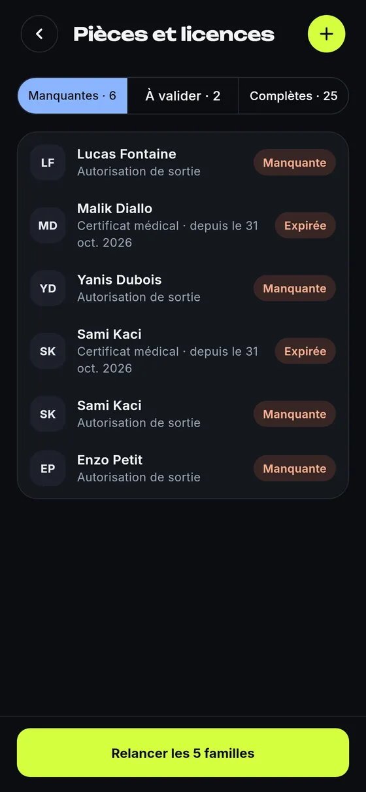
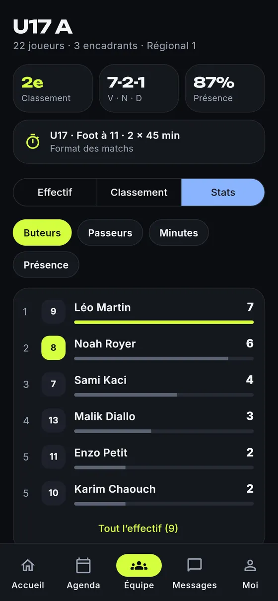
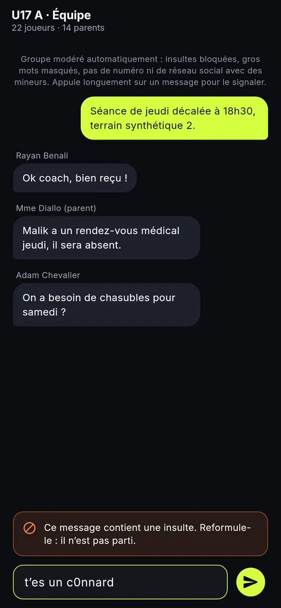
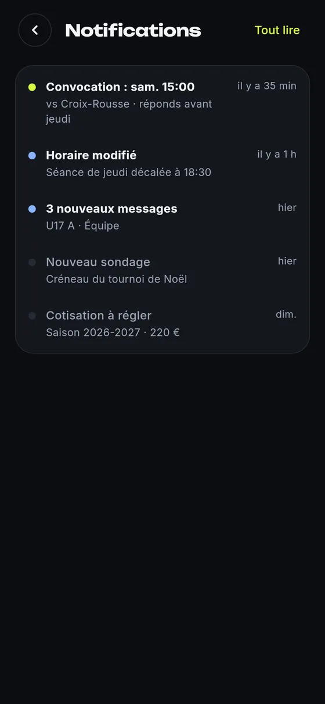
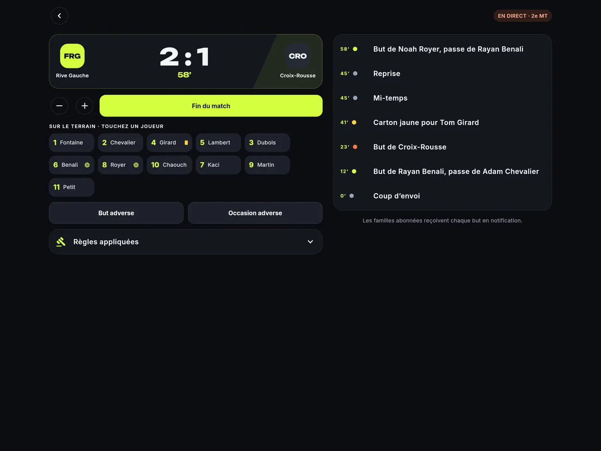

Convocations et covoiturage
Un événement récurrent se crée en une fois pour toute la saison. Les familles répondent présent ou absent, proposent une place dans leur voiture, reçoivent un rappel la veille.
Foot · Hand · Basket · Rugby · Volley
Volta fait vivre le club toute la semaine : convocations, compo, covoiturage, match en direct, messagerie encadrée, pièces et cotisations. Les joueurs reviennent pour leur carte. Les parents savent tout sans relancer personne.
Le match en direct
Le coach touche le joueur, puis l'action : but, passe, carton, changement. Les parents restés à la maison voient chaque action arriver avec sa séquence animée, le score et le chrono. Après le coup de sifflet, le coach et l'arbitre signent la feuille de match dans l'app.




Ce qui fait revenir
Quand le coach publie la compo, chaque joueur découvre sa carte : poste, numéro et une note Volta calculée sur la saison à partir de la présence, des minutes, des buts, des passes et des votes « joueur du match ». Elle monte quand on vient à l'entraînement.
Le dimanche à 18 h, chaque équipe reçoit son récap de la semaine en plein écran : résultats, buteurs, série de présence, joueur du match. Pas besoin d'e-mail pour que tout le monde ouvre l'app.
L'organisation du club

Un événement récurrent se crée en une fois pour toute la saison. Les familles répondent présent ou absent, proposent une place dans leur voiture, reçoivent un rappel la veille.

L'appel du coach alimente la grille de la saison. Trois absences d'affilée ou une présence qui chute, et le coach est prévenu avant que le joueur ne quitte le club.

Certificat médical, autorisation de sortie, licence : les familles les envoient depuis leur téléphone, le dirigeant valide ou refuse, et relance d'un geste ceux qui manquent.

Buteurs, passeurs, minutes jouées, joueurs du match : tout sort automatiquement des matchs saisis en direct.

Annonces, photos, sondages, commentaires. Chacun voit ce qui concerne son équipe, et le bureau parle à tout le club d'un coup.

Contacts des responsables légaux, pièces, cotisation, présence et stats sur une seule page, visible du staff et du joueur lui-même.
Confiance


Sur tablette
Pas un téléphone étiré : les onglets passent dans une barre latérale, le terrain et le fil du match s'affichent côte à côte. Idéal posé sur le banc.

Football, handball, basket, rugby et volley. Le format du match (durée, périodes, nombre de joueurs, remplacements) dépend du sport et de la catégorie de l'équipe, et le coach peut l'ajuster. Le direct du volley (sets et points) arrive juste après le lancement.
Non. Le club garde son moyen de paiement habituel. Volta indique qui a payé, qui reste à relancer, et envoie les rappels.
Le club partage un code d'invitation. Le code donne le bon rôle (joueur, parent, coach), et un parent inscrit lui-même son enfant.
Sur une base Supabase dédiée à Volta. Les fichiers (photos, pièces) sont dans des espaces de stockage privés, jamais dans la base, et chaque accès passe par des règles vérifiées côté serveur.
Non, tout fonctionne sur téléphone. La tablette est un confort pour le coach au bord du terrain.
Volta est en cours de finition. Tu veux équiper ton club dès le lancement ?